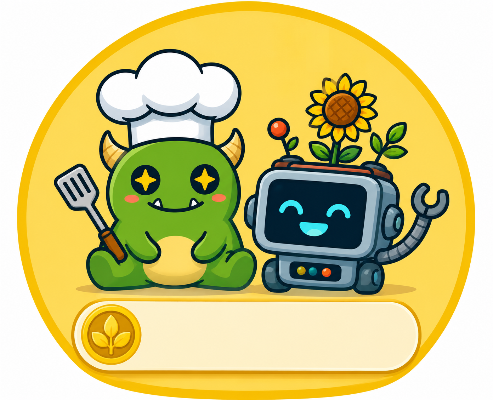

עלילות השף הירוק
״עלילות השף הירוק״ היא אפליקציית משחק אינטראקטיבית לילדים בגילאי 6–10. דרך משחקונים, אתגרים, משימות יצירתיות ומתכונים מותאמי גיל, הילדים יוצאים להרפתקה מהנה עם השף הירוק וביטו הרובוט ומגלים את עולם הבישול הבריא בדרך חווייתית ומסקרנת.
אנחנו מאמינים שסקרנות היא המפתח ללמידה. לכן האפליקציה נועדה לעודד ילדים לחקור, לשאול שאלות, להכיר מרכיבים חדשים ולהרגיש בטוחים יותר סביב אוכל, בישול ותזונה מגוונת.
בחבילת איטליה השף הירוק לוקח את הילדים למסע קולינרי לאיטליה! ארבעה מתכונים מרהיבים שמשלבים צבעים, טעמים וטכניקות בישול איטלקיות קלאסיות — מפסטה סגולה צבעונית, דרך ברוסקטה חגיגית, מאפה פסטה עשיר ועד פנקוטה וניל קסומה עם סירופ רימונים.
כל מתכון בחבילה נבחר כדי להכניס את הילדים לאווירה האיטלקית — מרכיבים מגוונים, תהליכי הכנה מהנים ותוצאה שכל המשפחה תיהנה ממנה.
להלן המתכונים המלאים להורדה. מומלץ להדפיס ולתלות במטבח לפני שמתחילים לבשל יחד!